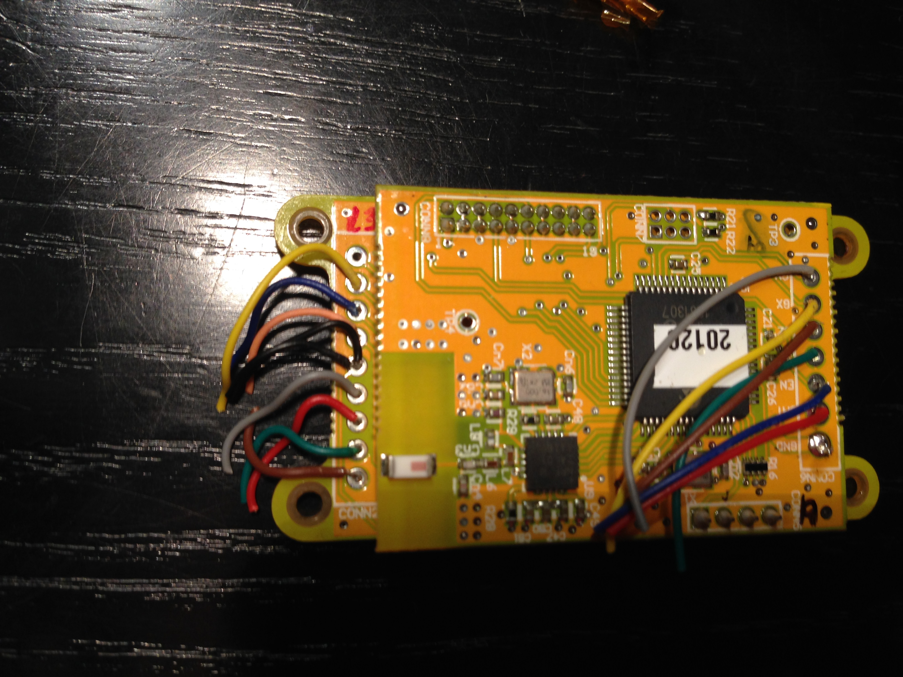

The Emotiv Epoc is a 14-channel EEG headset that brought the concept of affordable wireless EEG to the general public, paving the road for later portable EEG systems. It has been used for in several studies.
Unfortunately, the Epoc presents two characteristics that make some experiments unpractical. (1) The electrode placement, fix as it is, forbids locating electrodes on some interesting scalp places for certain EEG, for example on the central line. (2) The technology of the electrodes, the contact between the electrode and scalp is mediated by sponges that need to be wet with saline solution, thus for long recordings (>1 hr), the solution starts to dry affecting the quality of the EEG signals.
After some years of use at our laboratory, the MuSAE Lab, the structure that holds the Epoc arms as one piece got broken. While this condition could be fixed, we opted to follow the approach taken by Stefan Debener in the 2012 paper How about taking a low-cost, small, and wireless EEG for a walk?, this is to say, to remove the electronics from the EEG headset and give it a new (and more practical) case.
{kind=link}
Emotiv Epoc. In the red the part that was broken.
Beside the new casing:
- The original battery was replaced by a 3.7V @ 1100mAh battery, with a size 4 x 37 x 59 mm (important to the case design).
- The EEG headset cables were replaced by cables ended in the DIN (touch-proof) connectors to support different standard electrode models.
| 3.7V 1100mAh battery | EEG DIN (touch-proof) cables |
{kind=link}
{kind=link}
The vamping process consisted of four parts:
- Striping the electronics from the Epoc
- Soldering the new battery and electrode cables
- Placing everything in the new case
1. Striping the electronics
This part was performed by Liviu Ivanescu, here some of the pictures.
|  | ||
|---|---|---|
 |
Additional photos on the Epoc interior can be found here and in this report. | |
{kind=link}
{kind=link}
2. Replacing the battery and electrode cables
The soldering part is the most crucial, as screwing it screws the EEG device that was working (however it was not useful with the broken structure). Note that thru-hole pads for the cables interconnect the top and bottom layer of the PCB, i.e. they are Thru-hole Vias, thus it is not needed to pass the cables through the hole, a surface soldering will be enough to assure a good electric contact.
{kind=link}
Surface soldering.
3. Place everything in a new casing
The approach for the case was 3D printing, the models was designed in Tinkercad as publicly available here. It 3D printed at District3.
| Tinkercad model | Placement of components |
{kind=link}
{kind=link}
{kind=link}
Final result, a Canadian looney ($1) with a 26.5 mm diameter as reference.
To keep the the elements in its place I used segments of silicone bars, which happened to be very useful for that purpose. To take the cables out of the box, a rubber wiring grommet was used.
Finally a quick road test, Epoc in its new case + a bucket of salt water + ECG signal.
{kind=link}
Conclusion
The hole process of tuning up the Epoc was a great experience, and I hope this post can help others in repairing and / or improving their own Epoc devices.
Comments
comments powered by Disqus